旋转体、展开图与面积体积 由母线、半径、高或展开关系计算几何量；组合与挖空须辨明边界。
嘉定 · 第6题 ★☆☆☆☆ · 教师预估 本题资料或解析有待核事项，预览不可作为已审定成品。
已知圆锥的母线长为2，底面半径为1，则圆锥的侧面积为
奉贤 · 第11题 ★★☆☆☆ · 教师预估 本题资料或解析有待核事项，预览不可作为已审定成品。
上海市奉贤区奉城镇的古建筑万佛阁（图1）的屋檐下常系挂风铃（图2），风吹铃动，悦耳清脆，亦称惊鸟铃，一般一个惊鸟铃由铜铸造而成，由铃身和铃舌组成，为了知道一个惊鸟铃的质量，可以通过计算该惊鸟铃的体积，然后由物理学知识计算出该惊鸟铃的质量，因此我们需要作出一些合理的假设：ℑ O 1 O 3 = 20 c m \Im O _ { 1 } O _ { 3 } = 2 0 \mathrm { c m } ℑ O 1 O 3 = 20 cm O 2 O 3 = 18 c m O _ { 2 } O _ { 3 } = 1 8 \mathrm { { c m } } O 2 O 3 = 18 cm A B = 16 c m A B = 1 6 \mathrm { c m } A B = 16 cm . 9 g / c m 3 ) . 9 \mathrm { { g } / \mathrm { { c m } ^ { 3 } ) } } .9 g / cm 3 )
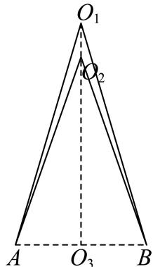
宝山 · 第10题 ★★★☆☆ · 教师预估 …
徐汇 · 第11题 ★★★☆☆ · 教师预估 本题资料或解析有待核事项，预览不可作为已审定成品。
徐汇滨江作为2024年上海国际鲜花展的三个主会场之一，吸引了广大市民前往观展并拍照留念.图中的花盆是种植鲜花的常见容器，它可视作两个圆台的组合体，上面圆台的上､下底面直径分别为
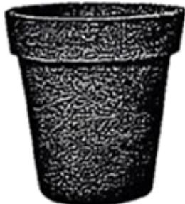
普陀 · 第8题 ★★☆☆☆ · 教师预估 本题资料或解析有待核事项，预览不可作为已审定成品。
若圆锥PO 的体积为 2 2 π 3 \frac { 2 { \sqrt { 2 } } \pi } { 3 } 3 2 2 π 1 3 \frac 1 3 3 1 PO 的表面积为
杨浦 · 第7题 ★★☆☆☆ · 教师预估 本题资料或解析有待核事项，预览不可作为已审定成品。
已知一个正四棱锥的每一条棱长都为2，则该四棱锥的体积为
杨浦 · 第9题 ★★★☆☆ · 教师预估 本题资料或解析有待核事项，预览不可作为已审定成品。
将一个半径为1的球形石材加工成一个圆柱形摆件，则该圆柱形摆件侧面积的最大值为
松江 · 第6题 ★☆☆☆☆ · 教师预估 本题资料或解析有待核事项，预览不可作为已审定成品。
已知一个圆锥的底面半径为3，其侧面积为15π，则该圆锥的高为
浦东 · 第18题 ★★★☆☆ · 教师预估 本题资料或解析有待核事项，预览不可作为已审定成品。
如图，已知AB为圆柱 O O 1 O O _ { 1 } O O 1 O A = 2 O A = 2 O A = 2 A A 1 A A _ { 1 } A A 1
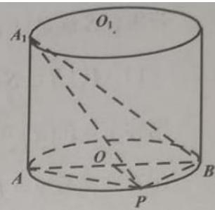
∠ B O P = 9 0 ∘ \angle B O P = 9 0 ^ { \circ } ∠ BOP = 9 0 ∘ A − P B A 1 A - P B A _ { 1 } A − PB A 1 ∠ B O P = 6 0 ∘ \angle B O P = 6 0 ^ { \circ } ∠ BOP = 6 0 ∘ A 1 B A P A _ { 1 } B { } A P A 1 B A P 虹口 · 第6题 ★☆☆☆☆ · 教师预估 若某圆锥的底面半径为1，高为1，则该圆锥的侧面积为 ．（结果保留π）
金山 · 第7题 ★★☆☆☆ · 教师预估 已知某圆锥的侧面展开图是圆心角为 2 π \sqrt { 2 } \pi 2 π
金山 · 第15题 ★★★☆☆ · 教师预估 古希腊数学家阿波罗尼奥斯用不同的平面截同一圆锥，得到了圆锥曲线，其中的一种如图所示．用过M点且垂直于圆锥底面的平面截两个全等的对顶圆锥得到双曲线的一部分，已知高 P O = 2 P O = 2 PO = 2 E F ⊥ A B E F \bot A B EF ⊥ A B
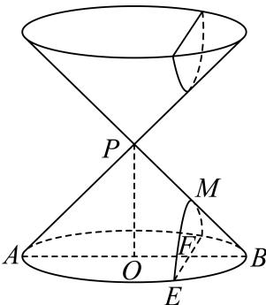
A. 5 6 \frac { 5 } { 6 } 6 5
B. 4 5 \frac { 4 } { 5 } 5 4
C. 3 4 \frac 3 4 4 3
D. 3 5 \frac { 3 } { 5 } 5 3
长宁 · 第2题 ★☆☆☆☆ · 教师预估 已知圆锥的底面半径为1，母线长为2，则该圆锥的体积是 （结果保留π）
闵行 · 第5题 ★☆☆☆☆ · 教师预估 已知圆锥的高为8，底面半径为6，则该圆锥的侧面积为
青浦 · 第8题 ★★☆☆☆ · 教师预估 本题资料或解析有待核事项，预览不可作为已审定成品。
已知圆柱M的底面半径为3，高为 3 , { \sqrt { 3 } } , 3 ,
黄浦 · 第4题 ★☆☆☆☆ · 教师预估 若圆柱的底面半径与高均为1，则其侧面积为
空间位置判定与综合证明 依据判定定理和中点构造证明平行垂直；保留体积计算等前置小问，区分给定角度与要求求角。
嘉定 · 第14题 ★★☆☆☆ · 教师预估 本题资料或解析有待核事项，预览不可作为已审定成品。
已知α,β是两个不同的平面，a，b是两条不同的直线，下列条件中，一定得到直线l⊥α的是（ ）
A. α ⊥ β , l / / β \alpha \perp \beta , l / / \beta α ⊥ β , l // β
B. l ⊥ a , a / / α l \perp a , a / / \alpha l ⊥ a , a // α
C. l / / a , a ⊥ α l / / a , a \bot \alpha l // a , a ⊥ α
D. l ⊥ a , l ⊥ b , a ⊂ α , b ⊂ α l \bot a , l \bot b , a \subset \alpha , b \subset \alpha l ⊥ a , l ⊥ b , a ⊂ α , b ⊂ α
嘉定 · 第17题 ★★★☆☆ · 教师预估 本题资料或解析有待核事项，预览不可作为已审定成品。
如图所示，在三棱柱 A B C − A 1 B 1 C 1 A B C - A _ { 1 } B _ { 1 } C _ { 1 } A BC − A 1 B 1 C 1 A B = A C A B = A C A B = A C B B 1 C 1 C ⊥ B B _ { 1 } C _ { 1 } C \bot B B 1 C 1 C ⊥ A 1 C 1 A _ { 1 } C _ { 1 } A 1 C 1
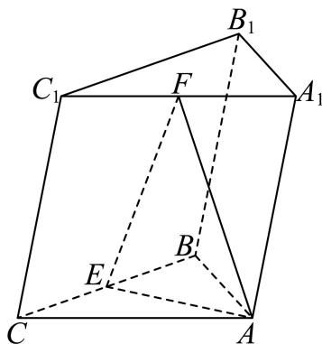
△ A B C \triangle A B C △ A BC C C 1 = B C C C _ { 1 } = B C C C 1 = BC C C 1 C C _ { 1 } C C 1 6 0 ∘ 6 0 ^ { \circ } 6 0 ∘ A B C − A 1 B 1 C 1 A B C - A _ { 1 } B _ { 1 } C _ { 1 } A BC − A 1 B 1 C 1 E F / / E F / / EF // A A 1 B 1 B ⋅ A A _ { 1 } B _ { 1 } B _ { \cdot } A A 1 B 1 B ⋅ 奉贤 · 第15题 ★★★☆☆ · 教师预估 本题资料或解析有待核事项，预览不可作为已审定成品。
在四棱锥 S − A B C D S - A B C D S − A BC D S A → = x S B → + y S C → + z S D → \overrightarrow { S A } = x \overrightarrow { S B } + y \overrightarrow { S C } + z \overrightarrow { S D } S A = x SB + y SC + z S D
A. ( 1 , − 1 , 1 ) ( 1 , - 1 , 1 ) ( 1 , − 1 , 1 )
B. ( 1 , 0 , − 1 ) ( 1 , 0 , - 1 ) ( 1 , 0 , − 1 )
C. ( 1 , 0 , 0 ) ( 1 , 0 , 0 ) ( 1 , 0 , 0 )
D. ( 1 , − 1 , − 1 ) ( 1 , - 1 , - 1 ) ( 1 , − 1 , − 1 )
崇明 · 第14题 ★★☆☆☆ · 教师预估 已知直线l和平面α，则“l垂直于α内的两条直线”是“l⊥α”的（ ）
A. 充分非必要条件
B. 必要非充分条件
C. 充要条件
D. 非充分非必要条件
徐汇 · 第6题 ★★☆☆☆ · 教师预估 本题资料或解析有待核事项，预览不可作为已审定成品。
已知m,n为空间中两条不同的直线，α,β为两个不同的平面，若 m ⊂ α , α ∩ β = n m \subset \alpha , \alpha \cap \beta = n m ⊂ α , α ∩ β = n m / / n m / / n m // n m / / β m / / \beta m // β
浦东 · 第14题 ★★☆☆☆ · 教师预估 本题资料或解析有待核事项，预览不可作为已审定成品。
设m、n为两条直线，α、β为两个平面，且 α ∩ β = n \alpha \cap \beta = n α ∩ β = n
A. 若 m ⊥ α , m \bot \alpha , m ⊥ α , m ⊥ n m \perp n m ⊥ n
B. 若 m ˙ / / α \dot { m } / / \alpha m ˙ // α ∣ m / / n \scriptstyle | m / / n ∣ m // n
C. 若 ⋅ ˙ m / / α \dot { \cdot } _ { m } / / \alpha ⋅ ˙ m // α . m / / β , . m / / \beta , . m // β , m / / n m / / n m // n
D. 若 m / / n , m / / n , m // n , ∣ m / / α | m / / \alpha ∣ m // α m / / β m / / \beta m // β
长宁 · 第14题 ★★☆☆☆ · 教师预估 已知非零空间向 ♯ a ⃗ , b ⃗ \sharp { \vec { a } } , { \vec { b } } ♯ a , b → c，则下列说法正确的是（ ）
A. G ⃗ a ⃗ ⊥ b ⃗ , a ⃗ ⊥ c ⃗ \vec { \mathcal { G } } \vec { a } \perp \vec { b } , \vec { a } \perp \vec { c } G a ⊥ b , a ⊥ c ∣ b ∣ ⃗ / ∣ c ⃗ \vec { \vert b \vert } / \vec { \vert c } ∣ b ∣ / ∣ c
B. τ ⃗ + a ⃗ ⊥ b ⃗ , a ⃗ ⊥ c ⃗ \stackrel { \scriptscriptstyle + } { \vec { \tau } } \vec { a } \perp \vec { b } , \vec { a } \perp \vec { c } τ + a ⊥ b , a ⊥ c b ⃗ ⊥ c ⃗ \vec { b } \perp \vec { c } b ⊥ c
C. H → a → ⊥ b → , a → / / c → \overrightarrow { \mathcal { H } } \overrightarrow { a } \perp \overrightarrow { b } , \overrightarrow { a } / / \overrightarrow { c } H a ⊥ b , a // c b / / c \stackrel { } { b } / / \stackrel { } { c } b // c
D. H → a → ⊥ b → , a → / / c → \overrightarrow { \mathcal { H } } \overrightarrow { a } \perp \overrightarrow { b } , \overrightarrow { a } / / \overrightarrow { c } H a ⊥ b , a // c ∣ b ⊥ c ∣ ⃗ \vec { | b \perp c | } ∣ b ⊥ c ∣
闵行 · 第13题 ★★☆☆☆ · 教师预估 本题资料或解析有待核事项，预览不可作为已审定成品。
在空间中，“a , b a,b a , b a , b a,b a , b
A. 充分非必要条件
B. 必要非充分条件
C. 充要条件
D. 既非充分又非必要条件
青浦 · 第18题 ★★★☆☆ · 教师预估 本题资料或解析有待核事项，预览不可作为已审定成品。
P − A B C P - A B C P − A BC P A B ⊥ P A B \bot P A B ⊥ A B C , A B = 6 , B C = 2 3 , A C = 2 6 , D . A B C , A B = 6 , B C = 2 { \sqrt { 3 } } , A C = 2 { \sqrt { 6 } } , D . A BC , A B = 6 , BC = 2 3 , A C = 2 6 , D . A D = 2 D B , C E = 2 E B , P D ⊥ A C . A D = 2 D B , C E = 2 E B , P D \bot A C . A D = 2 D B , CE = 2 EB , P D ⊥ A C . D E / / D E / / D E // P A C ; P A C ; P A C ; P D ⊥ P D \perp P D ⊥ A B C A B C A BC
角度、距离与空间综合证明 完整保留空间大题，联系中点构造、建系法和等体积法求角距。
奉贤 · 第19题 ★★★★☆ · 教师预估 本题资料或解析有待核事项，预览不可作为已审定成品。
如图为正四棱锥 P − A B C D , O P - A B C D , O P − A BC D , O C D / / C D / / C D // P A B , P A B , P A B , P A C ⊥ P A C \bot P A C ⊥ (2) (8分) 设E为PB上的一点，− B E → = 2 3 B P → . \overrightarrow { B E } = \frac { 2 } { 3 } \overrightarrow { B P } . BE = 3 2 BP . A D = A P = 3 2 . A D = A P = 3 { \sqrt { 2 } } . A D = A P = 3 2 . arctan 2 2 \arctan { \frac { \sqrt { 2 } } { 2 } } arctan 2 2 A D = 3 2 A D = 3 { \sqrt { 2 } } A D = 3 2
宝山 · 第17题 ★★★☆☆ · 教师预估 …P − A B C D P - A B C D P − A BC D P A = P B = A D = 3 P A = P B = A D = 3 P A = PB = A D = 3 A B = 4 A B = 4 A B = 4 4 5 . 4 { \sqrt { 5 } } . 4 5 . A B C D A B C D A BC D
崇明 · 第17题 ★★★☆☆ · 教师预估 本题资料或解析有待核事项，预览不可作为已审定成品。
如图，在直三棱柱 A B C − A 1 B 1 C 1 A B C - A _ { 1 } B _ { 1 } C _ { 1 } A BC − A 1 B 1 C 1 A 1 C 1 A _ { 1 } C _ { 1 } A 1 C 1 A A 1 = A B = B C = 2 A A _ { 1 } = A B = B C = 2 \quad A A 1 = A B = BC = 2 C 1 F ⊥ A B . C _ { 1 } F \bot A B . C 1 F ⊥ A B . C 1 F / / C _ { 1 } F / / C 1 F //
徐汇 · 第18题 ★★★★☆ · 教师预估 本题资料或解析有待核事项，预览不可作为已审定成品。
如图，在四棱锥 P − A B C D P - A B C D P − A BC D A D / / B C , ∠ A D C = ∠ P A B = π 2 , B C = C D = 1 2 A D A D / / B C , \angle A D C = \angle P A B = \frac { \pi } { 2 } , B C = C D = \frac { 1 } { 2 } A D A D // BC , ∠ A D C = ∠ P A B = 2 π , BC = C D = 2 1 A D π 2 \frac { \pi } { 2 } 2 π
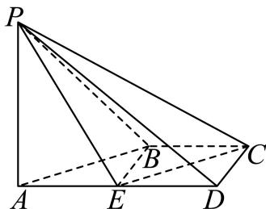
C D / λ ˉ C D / { \bar { \lambda } } C D / λ ˉ P − C D − A P - C D - A P − C D − A π 4 \frac { \pi } { 4 } 4 π 普陀 · 第17题 ★★★★☆ · 教师预估 本题资料或解析有待核事项，预览不可作为已审定成品。
图1所示的平行四边形ABCD中， C A = C B = 1 , C D = 2 C A = C B = 1 , \ C D = { \sqrt { 2 } } C A = CB = 1 , C D = 2 △ D A C \triangle D A C △ D A C P − A B C P - A B C P − A BC . P B = 3 . P B = { \sqrt { 3 } } . PB = 3
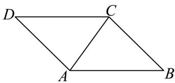
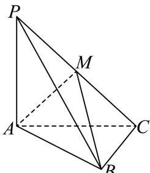
A M ⊥ B C A M \bot B C A M ⊥ BC P N / / P N / / PN // P − N B − A P - N B - A P − NB − A 杨浦 · 第17题 ★★★☆☆ · 教师预估 本题资料或解析有待核事项，预览不可作为已审定成品。
如图，在正方体 A B C D − A 1 B 1 C 1 D 1 A B C D - A _ { 1 } B _ { 1 } C _ { 1 } D _ { 1 } A BC D − A 1 B 1 C 1 D 1
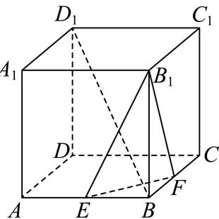
E F ⊥ B D 1 E F \bot B D _ { 1 } EF ⊥ B D 1 B 1 − E F − B B _ { 1 } - E F - B B 1 − EF − B 松江 · 第18题 ★★★☆☆ · 教师预估 本题资料或解析有待核事项，预览不可作为已审定成品。
如图，已知AB⊥平面ACD，AB∥DE， △ A C D \triangle A C D △ A C D A D = D E = 2 A B A D = D E = 2 A B A D = D E = 2 A B
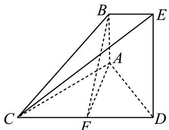
虹口 · 第9题 ★★★☆☆ · 教师预估 如图，已知正三角形ABC和正方形BCDE的边长均为2，且二面角 A − B C − D A - B C - D A − BC − D π 6 \frac { \pi } { 6 } 6 π A C → . B D → = { \overrightarrow { A C } } . { \overrightarrow { B D } } = A C . B D =
虹口 · 第18题 ★★★☆☆ · 教师预估 如图，已知在四棱柱 A B C D − E F G H A B C D - E F G H A BC D − EFG H
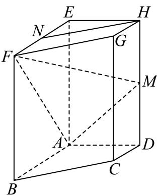
H N / / H N / / H N // A B / / C D , A B = E A = 2 , A D = D C = 1 A B / / C D , A B = E A = 2 , A D = D C = 1 A B // C D , A B = E A = 2 , A D = D C = 1 π 2 \frac { \pi } { 2 } 2 π A N I A N ^ { I } A N I 金山 · 第18题 ★★★☆☆ · 教师预估 如图，在四棱锥 P − A B C D P - A B C D P − A BC D ∠ B A D = ∠ C D A = 9 0 ∘ \angle B A D = \angle C D A = 9 0 ^ { \circ } ∠ B A D = ∠ C D A = 9 0 ∘ P A ⊥ P A \bot P A ⊥ A B C D A B C D A BC D P A = A D = D C = 1 , A B = 2 P A = A D = D C = 1 , A B = 2 P A = A D = D C = 1 , A B = 2
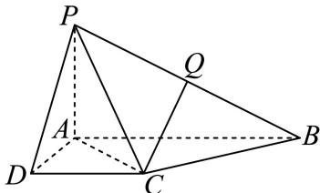
C Q / / C Q / / CQ // P A D P A D P A D 长宁 · 第18题 ★★★★☆ · 教师预估 本题资料或解析有待核事项，预览不可作为已审定成品。
如图所示，四棱柱 A B C D − A 1 B 1 C 1 D 1 A B C D - A _ { 1 } B _ { 1 } C _ { 1 } D _ { 1 } A BC D − A 1 B 1 C 1 D 1 1 的底面ABCD是正方形，O是底面的中心， A 1 O ⊥ A _ { 1 } O \bot A 1 O ⊥ A B C D , A B = A A 1 = 2 A B C D , A B = A A _ { 1 } = { \sqrt { 2 } } A BC D , A B = A A 1 = 2 A 1 C ⊥ A _ { 1 } C \bot A 1 C ⊥ B D D 1 B 1 B D D _ { 1 } B _ { 1 } B D D 1 B 1 O A 1 O A _ { 1 } O A 1 1 与平面 A A 1 B A A _ { 1 } B A A 1 B
闵行 · 第17题 ★★★★☆ · 教师预估 在直三棱柱 A B C − A 1 B 1 C 1 A B C - A _ { 1 } B _ { 1 } C _ { 1 } A BC − A 1 B 1 C 1 A A 1 = 3 A A _ { 1 } = 3 A A 1 = 3 ∠ B A C = 9 0 ∘ \angle B A C = 9 0 ^ { \circ } ∠ B A C = 9 0 ∘ A 1 C : A _ { 1 } C _ { : } A 1 C : A 1 C A _ { 1 } C A 1 C E M / / E M / / EM // A 1 A B B 1 A _ { 1 } A B B _ { 1 } A 1 A B B 1 A 1 − B C − A A _ { 1 } - B C - A A 1 − BC − A
静安 · 第15题 ★★★★☆ · 教师预估 我国古代数学著作《九章算术》中将四个面都是直角三角形的空间四面体叫做“鳖臑”.如图是一个水平放置的 △ A B C , C D ⊥ A B , ∠ A = 3 0 ∘ , ∠ B = 4 5 ∘ \triangle A B C , C D \bot A B , \angle A = 3 0 ^ { \circ } , \angle B = 4 5 ^ { \circ } △ A BC , C D ⊥ A B , ∠ A = 3 0 ∘ , ∠ B = 4 5 ∘ R t △ A C D % ˙ C D \begin{array} { r } { \mathrm { R t } \triangle A C D \dot { \% } C D } \end{array} Rt △ A C D % ˙ C D
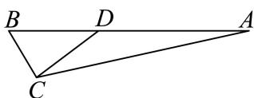
A. 6 0 ∘ 6 0 ^ { \circ } 6 0 ∘
B. 9 0 ∘ 9 0 ^ { \circ } 9 0 ∘
C. arctan 2 \arctan 2 arctan 2
D. arccos 3 3 \operatorname { a r c c o s } { \frac { \sqrt { 3 } } { 3 } } arccos 3 3
静安 · 第16题 ★★☆☆☆ · 教师预估 在四棱锥 P − A B C D P - A B C D P − A BC D A B → = ( 4 , − 2 , 3 ) , A D → = ( − 4 , 1 , 0 ) , A P → = ( − 6 , 2 , − 8 ) \overrightarrow { A B } = ( 4 , - 2 , 3 ) , \overrightarrow { A D } = ( - 4 , 1 , 0 ) , \overrightarrow { A P } = ( - 6 , 2 , - 8 ) A B = ( 4 , − 2 , 3 ) , A D = ( − 4 , 1 , 0 ) , A P = ( − 6 , 2 , − 8 )
A. 4
B. 3
C. 2
D. 1
静安 · 第19题 ★★★★☆ · 教师预估 如图所示，正三棱锥A−BCD的侧面是边长为2的正三角形.1 ◯ C D / / . \textcircled { 1 } C D / / . 1 ◯ C D //.
黄浦 · 第14题 ★★★☆☆ · 教师预估 本题资料或解析有待核事项，预览不可作为已审定成品。
若从正方体八个顶点中任取四个顶点分别记为A、B、C、D，则直线AB与CD所成角的大小不可能为（ ）
A. 3 0 ∘ 3 0 ^ { \circ } 3 0 ∘
B. 4 5 ∘ 4 5 ^ { \circ } 4 5 ∘
C. 6 0 ∘ 6 0 ^ { \circ } 6 0 ∘
D. 9 0 ∘ 9 0 ^ { \circ } 9 0 ∘
黄浦 · 第17题 ★★★☆☆ · 教师预估 如图，在正方体ABCD− A 1 B 1 C 1 D 1 A _ { 1 } B _ { 1 } C _ { 1 } D _ { 1 } A 1 B 1 C 1 D 1 B C 1 B C _ { 1 } B C 1
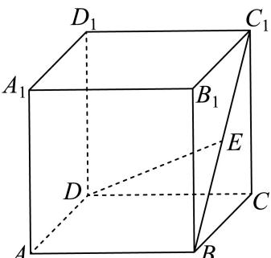
B C 1 ⊥ B C _ { 1 \bot } B C 1⊥ 空间坐标、向量表示与轨迹度量 将固定点基底线性表示、等距或对称约束转成空间向量及坐标；动点问题再讨论轨迹、计数或最值。
嘉定 · 第10题 ★★★☆☆ · 教师预估 本题资料或解析有待核事项，预览不可作为已审定成品。
已知空间向量 O B 1 → , O B 2 → , O B 3 → \overrightarrow { O B _ { 1 } } , \overrightarrow { O B _ { 2 } } , \overrightarrow { O B _ { 3 } } O B 1 , O B 2 , O B 3 ∣ A B 1 → ∣ = ∣ A B 2 → ∣ = ∣ A B 3 → ∣ = 1 \left| \overrightarrow { A B _ { 1 } } \right| = \left| \overrightarrow { A B _ { 2 } } \right| = \left| \overrightarrow { A B _ { 3 } } \right| = 1 A B 1 = A B 2 = A B 3 = 1 O P → = O B 1 → + O B 2 → + O B 3 → \overrightarrow { O P } = \overrightarrow { O B _ { 1 } } + \overrightarrow { O B _ { 2 } } + \overrightarrow { O B _ { 3 } } OP = O B 1 + O B 2 + O B 3 ∣ ⟶ A P ⃗ ∣ ≤ 1 \left| \begin{array} { l } { \longrightarrow } \\ { \vec { A P } } \end{array} \right| \le 1 ⟶ A P ≤ 1 O A → \overrightarrow { O A } O A
宝山 · 第15题 ★★★☆☆ · 教师预估 …A B C D − A 1 B 1 C 1 D 1 A B C D - A _ { 1 } B _ { 1 } C _ { 1 } D _ { 1 } A BC D − A 1 B 1 C 1 D 1 C C 1 C C _ { 1 } C C 1 C 1 D 1 C _ { 1 } D _ { 1 } C 1 D 1 P E ⊥ P F P E \bot P F PE ⊥ PF A A 1 A A _ { 1 } A A 1
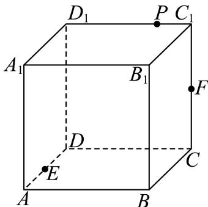
A. 2 2 \frac { \sqrt { 2 } } { 2 } 2 2
B. 1
C. 2 \sqrt { 2 } 2
D. 2
崇明 · 第9题 ★☆☆☆☆ · 教师预估 在空间直角坐标系中，点(1,2,3)关 F x O y \operatorname { F } x O y F x O y
普陀 · 第9题 ★★★☆☆ · 教师预估 本题资料或解析有待核事项，预览不可作为已审定成品。
设λ ∈ R，在如图所示的平行六面体 A B C D − A 1 B 1 C 1 D 1 A B C D - A _ { 1 } B _ { 1 } C _ { 1 } D _ { 1 } A BC D − A 1 B 1 C 1 D 1 1 中， ∠ A 1 A B = ∠ A 1 A D = ∠ B A D = π 3 . \angle A _ { 1 } A B = \angle A _ { 1 } A D = \angle B A D = { \frac { \pi } { 3 } } . ∠ A 1 A B = ∠ A 1 A D = ∠ B A D = 3 π . A A 1 = 2 , A B = A D = 1 A A _ { 1 } = 2 , A B = A D = 1 A A 1 = 2 , A B = A D = 1 M 是棱 C 1 D 1 C _ { 1 } D _ { 1 } C 1 D 1 → → λ 1 N = λ A 1 D 1 ‾ \xrightarrow { \xrightarrow { } } { \lambda _ { 1 } N } = \overline { { \lambda A _ { 1 } D _ { 1 } } } λ 1 N = λ A 1 D 1 A M ⟶ . C N ⟶ = 2 \stackrel { \longrightarrow } { A M } . \stackrel { \longrightarrow } { C N } = 2 A M ⟶ . CN ⟶ = 2 λ 的值为
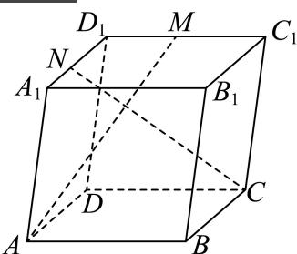
虹口 · 第15题 ★★★☆☆ · 教师预估 本题资料或解析有待核事项，预览不可作为已审定成品。
已知边长为2的正四面体A−BCD的内切球（球面与四面体四个面都相切的球）的球心为O，若空间中的动点P满足 O P → = x O C → + y O B → + z O D → , x , y , z ∈ [ 0 , 1 ] \overrightarrow { O P } = x \overrightarrow { O C } + y \overrightarrow { O B } + z \overrightarrow { O D } , x , y , z \in [ 0 , 1 ] OP = x OC + y OB + z O D , x , y , z ∈ [ 0 , 1 ]
A. 2 \sqrt { 2 } 2
B. 2 3 \frac { \sqrt { 2 } } { 3 } 3 2
C. 2 3 2 \sqrt { 3 } 2 3
D. 3 3 \frac { \sqrt { 3 } } { 3 } 3 3
金山 · 第16题 ★★★★☆ · 教师预估 本题资料或解析有待核事项，预览不可作为已审定成品。
已知三棱锥 A 1 − A 2 A 3 A 4 A _ { 1 } - A _ { 2 } A _ { 3 } A _ { 4 } A 1 − A 2 A 3 A 4 A 1 , A 2 , A 3 , A 4 A _ { 1 } , A _ { 2 } , A _ { 3 } , A _ { 4 } A 1 , A 2 , A 3 , A 4 D = { d ∣ d = ∣ P A i ∣ , i = 1 , 2 , 3 , 4 } D = \{ d | d = | P A _ { i } | , i = 1 , 2 , 3 , 4 \} D = { d ∣ d = ∣ P A i ∣ , i = 1 , 2 , 3 , 4 }
A. 3
B. 6
C. 7
D. 10
长宁 · 第12题 ★★★★☆ · 教师预估 本题资料或解析有待核事项，预览不可作为已审定成品。
点P、M、N分别位于正方体 A B C D − A ′ B ′ C ′ D ′ A B C D - A ^ { \prime } B ^ { \prime } C ^ { \prime } D ^ { \prime } A BC D − A ′ B ′ C ′ D ′ P M → ⋅ P N → \overrightarrow { P M } \cdot \overrightarrow { P N } PM ⋅ PN
青浦 · 第14题 ★☆☆☆☆ · 教师预估 本题资料或解析有待核事项，预览不可作为已审定成品。
若点 P ( x , y , z ) ( x y z ≠ 0 ) P \left( x , y , z \right) \left( x y z \neq 0 \right) P ( x , y , z ) ( x yz = 0 )
A. 关 F X Oz − \operatorname { \mathbb { F } } _ { \mathbf { X } } \operatorname { O z } ^ { \mathrm { - } } F X Oz −
B. 关于x轴对称
C. 关于y轴对称
D. 关于坐标原点对称
黄浦 · 第8题 ★★★☆☆ · 教师预估 在正四面体 A B C D A B C D A BC D △ A B C \triangle A B C △ A BC D N → = λ D A → + μ D B → + ν B C → ( λ , μ , ν ∈ R ) \overrightarrow { D N } = \lambda \overrightarrow { D A } + \mu \overrightarrow { D B } + \nu \overrightarrow { B C } \left( \lambda , \mu , \nu \in \mathbf { R } \right) D N = λ D A + μ D B + ν BC ( λ , μ , ν ∈ R ) λ + μ + ν = \lambda + \mu + \nu = λ + μ + ν =